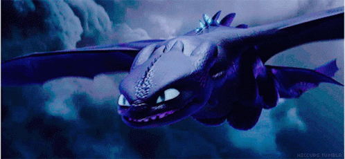
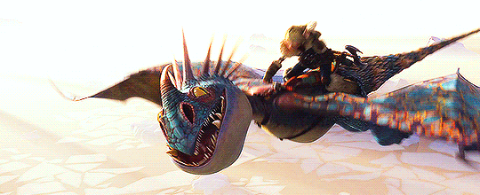
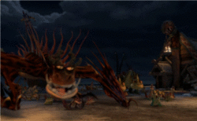
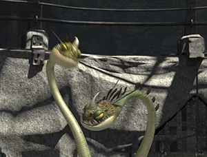
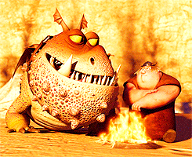

-
#Furia da noiteClasse Relampago
Ele nunca rouba comida. Ele nunca se revela. E ele nunca erra" O Fúria da Noite é uma espécie de dragão que só aparece no filme. Banguela é um Fúria da Noite no filme, em contraste com o seu original do livro, um Dragão Comum ou de Jardim. "O mais raros e mais inteligentes da espécie dragão, o Fúria da Noite se distingue por sua cor escura e penetrantes olhos amarelos, bem como seu tamanho menor, o peito pesado e pescoço curto. Possuindo a maior relação de asa-a-corpo de todos os dragões, ele pode voar mais alto, mais rápido e por mais tempo que qualquer dragão, e sua relação potência-peso incrível torna-o capaz de decolagem vertical. Seu fogo não convencional (a massa semi-sólida em chamas com um acetileno/chama de oxigênio) explode seu alvo com o impacto. Seu modo de ataque assinatura é executado depois do pôr do sol e da alta altitude - envolta em suas asas, ele mergulha como uma bala, puxando-se no último momento para entregar uma explosão preciso e explosivo então foge de volta a escuridão. A única advertência é o ruído balístico do Fúria da Noite faz mergulho. No vôo, o Fúria da Noite se assemelha a um avião ou a um jato supersônico.
-
#Nadder mortal
Um dos dragões mais bonitos do mundo é o Nadder Mortal. É facilmente reconhecido pelo corpo colorido e brilhantes pontas amarelas que cobrem é cabeça à cauda. Este dragão colorido é ativo qualquer hora do dia ou da noite. São velozes e ágeis no ar e pode voar por longas distâncias, mas estão quase sempre a terra antes de atacar. Nadders viajam e atacam em grupos, tornando-os especialmente perigosos. O Nadder Mortal não é o maior ou o mais rápido dragão, mas possui o fogo mais quente no mundo dragão. A explosão de um Nadder pode derreter aço, ou transformar um homem a cinzas em minutos. Mas os perigos da Nadder não param por aí. A cauda do Nadder pode chicotear, liberando uma rajada de espinhos gigantes venenosos que podem penetrar árvores,pessoas e rochas sólidas.
-
#Pesadelo MonstruosoClasse Fogueira
"Não há dragão mais feroz ou temido que o Pesadelo Monstruoso. Este dragão gigantesco tem um pescoço longo, costas e cauda, e é coberto de escamas vermelhas e longos espinhos. O Pesadelo Monstruoso tem uma boca enorme que pode engolir até vikings. Este dragão pode atacar a qualquer hora do dia ou da noite, no ar ou no chão. Ele é muito agressivo, e nunca foge à luta. Seu fogo é espesso e pegajoso, agarrando-se às paredes e descendo colinas como um rio de fogo. O Pesadelo também tem um péssimo hábito de se incendiar." De acordo com o Bocão, a melhor forma de domar um Pesadelo é apertar sua boca fechada, deixando-o incapaz de abrir as suas enormes mandíbulas, muito parecido com um crocodilo (no entanto, o resto do dragão é livre para fazer o que quiser). Depois Melequento revelou que o Pesadelo Monstruoso gosta de seus chifres presos ao chão. Por natureza, o Pesadelo é destemido e orgulhoso. Os Pesadelos são alguns dos dragões mais fortes e eles sabem disso. A melhor maneira de ganhar a confiança de um Pesadelo é simplesmente mostrar-lhe o respeito que merece, colocando a mão suavemente no seu focinho e mostrando-lhe não ser uma ameaça para ele, esse é o melhor caminho a percorrer.
-
#ZíperarrepianteClasse Mistério
É um dragão grande, com duas cabeças. É astuto e surpreendente, mas certos ruídos podem confundi-lo e fazer-lhe entrelaçar suas cabeças. O dragão tem duas personalidades e duas mentes, uma em cada cabeça, e uma frequentemente discute com a outra sobre o que fazer. O Zíper Arrepiante na arena de treinamento Este dragão lembra alguns irmãos vikings brigões, quando não estão fugindo dele. Ocasionalmente, o dragão esquece que é um dragão de duas cabeças, e cada cabeça tenta ir para um lado, o que pode ser problemático. No entanto, as suas duas cabeças também fornecem uma arma mortal que é única. A cabeça da esquerda solta um gás verde e inflamável, enquanto a cabeça da direita solta uma faísca elétrica de sua boca para acender o gás, criando explosões letais. Por si só, o gás pode deixar um humano desorientado por inalação. Ficam desorientados com um da especie Boulder. A espinha do Zíper Arrepiante tem muitos lóbulos vermelho-brilhantes que vão para baixo dele. Ocasionalmente, o Arrepiante usa-os para unir seus pescoços, tornando-o menos intimidador. Eles têm presas serradas, utilizadas para injetar veneno para pré-digestão. Seus dentes superiores são muito mais nítidos e são todos do mesmo tamanho, enquanto seus dentes inferiores são muito mais longos e ficam acima da linha da mandíbula.
-
#GronckelClasse Boulder
Gronckel têm cabeças gigantes, corpos curtos, e as caudas redondas. Gronckel tem a pele grossa e impenetrável igual a uma armadura flexível ,a cauda é dura, arredondada e mortal ,pode ser usada como porrete e com 2 toneladas e meia vence com facilidade dragões de pequeno/médio porte . Gronckel têm asas relativamente pequenas que batem tão rápido quanto as de um beija-flor. Eles são lentos no ar, mas compensam isso com sua manobrabilidade. Um Gronckel pode voar para trás, de lado, e até mesmo pairar. Gronckels atacam do ar, onde sua principal arma é mais eficaz. Gronckels mastigam pedras, derretendo-as em seu interior e cuspindo-as como bolas de fogo e lava, ele é muito legal, mesmo sua característica mais ruim que é sua velocidade, consegue fazer mais ou menos 70km por hora dependendo das pedras que ele come pode ganhar uma nova habilidade, pode produzir vários tipos de ferro e até vidro porém pedras normais podem produzir apenas lava de gronckel um tipo de lava que pode ser azul,verde,vermelha,amarela ou rosa, um tipo de rocha se ingerida pelo gronckel produz uma explosão afetando também o dragão, sua defesa mais engraçada é que quando esta voando prestes a ser comido ele solta fogo por trás em forma de pum que atrasa o outro dragão para que ele possa escapar.